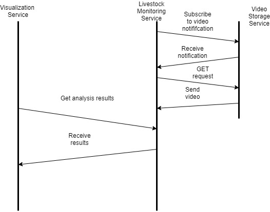

The "livestock_monitoring" ATLAS Service Template
Abstract
This document describes the specifications for a general livestock monitoring service whose purpose is to monitor the behavior of the livestock based on sensor data and provides that data as a time series to be consumed by other ATLAS services.
Intended audience
ATLAS software vendors, participants, who want to to provide an ATLAS livestock monitoring service instance, or who wish to consume ATLAS livestock monitoring service instances.
Functional overview
Services implementing the livestock monitoring template will monitor the behavior of the livestock based on sensor data and the template is species agnostic. Examples of sensor data would be:
- Video
- Noise
- Accelerometers
- etc.
Service MAY calculate time series data for the following:
- Activity Level
- Eating Activity
- Aggression Level
- Temperature
- Weight
- Noise Level
- Animal Size
The time series data would be provided for either a group of animals or individual animals.
Service MAY capture discrete event data out of the following events:
- Animal Death
- Aggression Events
Operational Context
Livestock monitoring service communicates with the video storage service and the visualization service in order to deliver the analysis services to the end consumer. The Livestock monitoring services subscribes to be notified whenever a new video arrives in the video storage service. Once the new video arrives arrives, the livestock monitoring service receives a notification and downloads the video and starts generating the analysis results. Once the analysis results are generated these are available to the visualization service to be queried.

Service template API
This section provides an abstract overview of the service template API. The detailed OpenAPI specifications can be found in the service registry.
Endpoints
timeseries_activity
Inputs:
- Start time
- End time
- resolution
Outputs:
- pen_id
- start date
- end date
- activity type
- unit
- timeseries_data
discrete_events
Inputs:
Outputs:
- start time
- end time
- confidence
- eventType
- timestamp
- animal id
- pen id
Data model
The detailed data models, with examples can be found in the adjoining OpenAPI specifications.